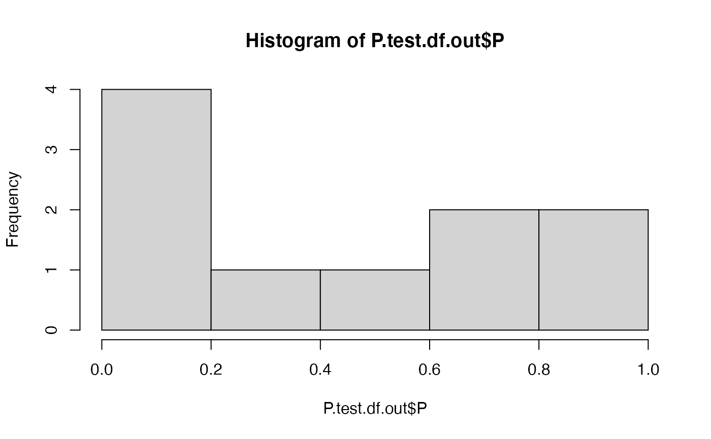

eq09_Pcgg.RdCalculates the proportion of pairs in source ("c") breeding habitat that occur between males that wintered in good habitat and females that wintered in good habitat ("gg").
eq09_Pcgg(W2, K.bc, B.mc, B.fc, ...)
| W2 | population vector |
|---|---|
| K.bc | source (c) carrying capacity (K) in breeding season (b)original file said "sink popualtion size" in comments |
| B.mc | Number of males (.m) settled into source (.xc) habitat |
| B.fc | females available in sink |
| ... | Aditional parameters |
P.cgg, the proportion of pairings in the "source" breeding habitat between male and females which both wintered in the good habitat
The logic of this function is:
IF mg > K.bc (number of males from good habitat > source K)
AND fg > K.bc (number of females from good > source K)
THEN all of the pairs on the source habitat will be good-good pairs.
That is, if there are enough males and females to fill up the source then the good-good pairing rate will be 100%. This will typically only occur when there are not many birds.
ELSE, the ratio of good-good pairs will be determined by the ratio of: 2a) The number of males OR females from good habitat, whichever is less 2b) AND the number of males or females on source habitat, whichever is less
B.fc should usually be lower than B.mc because females have lower survival and/or are forced by competition into poor habitat in the winter, resulting in carry over effects.
Possible ratios for the 2nd condition of the equation::
W2.mg/B.mc = males from good winter / males settled in source
W2.fg/B.mc = females from good winter / males settled in source
W2.mg/B.fc = males from good winter / females settled in source 4)W2.fg/B.fc = females from good winter / females settled in source
The ratio is tricky. It is determined by which sex is limiting in terms of input from good winter habitat (numerator) AND which sex is limiting in terms of total abundance in the breeding habitat.
Runge, MC and PP Marra. 2004. Modeling seasonal interactions in the population dynamics of migratory birds. In Greenberg, R and PP Marra, eds. Birds of two worlds. Johns Hopkins University Press, Baltimore.
# Test eq09_Pcgg() for single sets of parameters ## Set parameters: ### Population size: ### Create named population W2 vector using eq01buildW0vect() ### Note: ratio of good male to good females is 10:1 W2 <- eq01buildW0vect(10,10, 1, 10) ### source Breeding habitat carrying capacities (K.bc) #### 3 options K.bc.10 <- 10 K.bc.1 <- 1 K.bc.0 <- 0 ### Sink (k) Breeding habitat carrying capacity (K.bk) K.bk <- 500 ### Number of males and females allocated to source breeding habitat #### use eq04_Bfc() & eq06_Bmc() ##### K.bc = 10 B.fc.K10 <- eq04_Bfc(W2, K.bc.10) B.mc.K10 <- eq06_Bmc(W2, K.bc.10) ##### K.bc = 1 B.fc.K1 <- eq04_Bfc(W2, K.bc.1) B.mc.K1 <- eq06_Bmc(W2, K.bc.1) ##### K.bc = 0 B.fc.K0 <- eq04_Bfc(W2, K.bc.0) B.mc.K0 <- eq06_Bmc(W2, K.bc.0) #' #### K.bc = 10 ##### 10 source territories, 10 good males, but only 1 good female eq09_Pcgg(W2, K.bc = K.bc.10, B.fc = B.fc.K10, B.mc = B.mc.K10)#> [1] 0.1#### K.bc = 1 ##### 1 source territory, 10 good males, but only 1 good female eq09_Pcgg(W2, K.bc = K.bc.1, B.fc = B.fc.K1, B.mc = B.mc.K1)#> [1] 1#### K.bc = 0 ##### 0 source territories, 10 good males, but only 1 good female eq09_Pcgg(W2, K.bc = K.bc.0, B.fc = B.fc.K0, B.mc = B.mc.K0)#> [1] 0#> [1] 2304 12#> Min. 1st Qu. Median Mean 3rd Qu. Max. #> 0.01087 0.03125 0.41848 0.41696 0.64924 1.00000#> Min. 1st Qu. Median Mean 3rd Qu. Max. #> 0.01087 0.03125 0.41848 0.41696 0.64924 1.00000